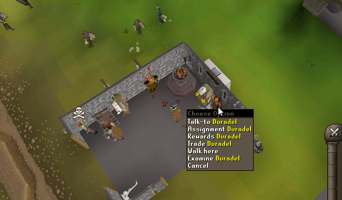
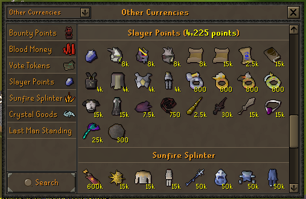

TASK-BASED COMBAT PROGRESSION
Impact RSPS Slayer Guide: Tasks, Levels and Locations
Learn how to get a task, progress from normal assignments to hard and elite tasks, find verified monster routes and spend Slayer points with a clear account plan.
Fast Slayer comes from choosing the right location and combat method for the task — not from using the most expensive setup on every assignment.
QUICK ANSWER
How does Slayer work in Impact RSPS?
Duradel is Impact’s only Slayer Master. Find him in the right-side building at ::home, or use ::slayer. He assigns tasks, manages cancellations and blocks, and opens the Slayer store.
Your active tier changes with Slayer level: normal tasks begin at level 1, hard tasks unlock at 65, and elite boss tasks unlock at 85. The official page lists 400, 700 and 1,250 Slayer points per completion respectively.
- Enchanted GemChecks the target location and remaining kills.
- Slayer LogRecords Slayer-monster kills and streaks.
- Live task dataUse the gem and current interfaces when a pool or route changes.
DURADEL AT HOME
How to get a Slayer task from Duradel
- 01
Travel to Duradel
Type
::homeand enter the right-side building, or use::slayerto teleport to the Slayer Master. - 02
Open his task options
Right-click Duradel. The supplied in-game screenshot shows Talk-to, Assignment, Rewards and Trade.
- 03
Choose Assignment
Read the assigned monster and required amount before leaving Home.
- 04
Confirm the route
Use the Enchanted Gem or search the monster name in the Home Teleport Tree. Do not assume an OSRS route applies.
- 05
Prepare for that location
Check the combat style, special items, Wilderness risk, runes, prayer and sustainable supplies.
- 06
Complete and repeat
Track the remaining kills, finish the assignment and return to Duradel for the next task.

::home to receive an Assignment or open his Rewards and Trade options.LEVEL 1 TO 99
Impact Slayer levels and task tiers
The official Slayer page writes the ranges as 1–65, 65–85 and 85–99, which overlaps at levels 65 and 85. The ladder below resolves that ambiguity by treating those values as unlock points: hard tasks unlock at 65, and elite tasks unlock at 85.
ENTRY TIER
Normal tasks
- Unlock
- Level 1
- Task type
- Standard monsters
- Expected pace
- Officially described as slower XP
- Main purpose
- Learn the task loop and build points
Use reliable gear, learn the teleport search and avoid expensive permanent blocks while the pool is unfamiliar.
UNLOCKS AT 65
Hard tasks
- Examples
- Bloodvelds and Hellhounds
- Combat plan
- Burst or barrage where grouping works
- Expected pace
- Often faster when targets stack
- Main purpose
- Faster XP and stronger point flow
Confirm the exact room before committing runes. A hard-task label does not make every spawn multi-combat.
UNLOCKS AT 85
Elite boss tasks
- Task type
- Boss-oriented assignments
- Verified example
- Vorkath
- Expected pace
- Generally slower to complete
- Main purpose
- Boss practice and reward potential
Potential drops can be stronger, but they are not guaranteed. Confirm access and mechanics before accepting the risk.
LEVEL-AWARE HELPER
Which Slayer tier am I on?
Enter an integer from 1 to 99. The result uses the same thresholds shown in the progression ladder.
Enter your current level to see the active tier, point payout and next unlock.
REPEATABLE WORKFLOW
How to complete an Impact Slayer task efficiently
Read the assignment
Confirm the monster, amount and live location before banking.
Check requirements
Look for a Slayer level, special item, access tool or Wilderness route.
Select the method
Choose melee, ranged or magic and decide whether grouping, bursting, barraging or chinning is supported.
Build the inventory
Bring food, prayer, ammunition, runes and charges with enough loot space.
Track the trip
Use the gem or current interface to watch remaining kills and note supply use.
Review the result
Record whether the task served XP, points, loot or progression before deciding to complete, cancel or block it next time.
VERIFIED SUBSET
Impact Slayer monster and location directory
The official Slayer page does not publish a complete assignment table. This directory includes only monsters, boss relationships and routes that the live page or its linked official sources identify. Use the Enchanted Gem for the current location of any assignment not covered here.
18 verified task or route entries shown.
Risk note: “Non-Wilderness” means the task route is outside the Wilderness; ordinary combat and boss risks still apply.
| Monster or boss | Tier | Level | Verified location | How to get there | Combat approach | Risk | Notes |
|---|---|---|---|---|---|---|---|
| Bloodvelds | Hard | Tier unlock: 65 | Use the live task location | Enchanted Gem or Teleport Tree search | Magic where grouping works | Non-Wilderness | Official hard-task example; exact room is not documented. |
| Hellhounds | Hard | Tier unlock: 65 | Use the live task location | Enchanted Gem or Teleport Tree search | Magic where grouping works | Non-Wilderness | Official hard-task example; exact room is not documented. |
| Ents | Unspecified | Not documented | Wilderness east of Corporeal Beast | Teleport Tree: Corporeal Beast, then travel east | Confirm in game | Wilderness | Carry only risk you can replace. |
| Wild dogs | Unspecified | Not documented | Brimhaven Dungeon | Teleport Tree: Brimhaven; run west and cut the vine | Confirm in game | Non-Wilderness | Requires 34 Woodcutting and an axe to enter. |
| Baby green dragons | Unspecified | Not documented | Brimhaven Dungeon | Cut the first vine, then the north vine; use the first stairs and run southeast | Confirm protection in game | Non-Wilderness | Documented alternative for a green-dragon assignment. |
| Green dragons | Unspecified | Not documented | East or west Wilderness spawns | ::easts or ::wests | Confirm protection in game | Wilderness | Both commands are documented as unsafe single-combat teleports. |
| Magic axes | Unspecified | Not documented | Taverley Dungeon | Use the Home Teleport Tree and dungeon map | Confirm in game | Non-Wilderness | Use ::hop if the current dungeon supports it and the spawn is occupied. |
| Magic axes | Unspecified | Not documented | Hut north of the Wilderness Resource Area | Bring a lockpick and navigate through the Wilderness | Confirm in game | Wilderness | Alternative route with Larran’s key potential. |
| Scorpions | Unspecified | Not documented | Taverley Dungeon | Use the Home Teleport Tree and official dungeon map | Confirm in game | Non-Wilderness | Verify the assigned room with the gem. |
| Chaos druids | Unspecified | Not documented | Taverley Dungeon | Use the Home Teleport Tree and official dungeon map | Confirm in game | Non-Wilderness | Verify the assigned room with the gem. |
| Vorkath | Elite | Tier unlock: 85 | Vorkath encounter | Use Teleport Tree search and confirm the current entry | Melee or ranged; learn all three attack styles | Non-Wilderness | Verified elite task; also counts toward Blue dragons. |
| Steel dragons | Unspecified | Not documented | Use the live task location | Enchanted Gem or Teleport Tree search | Confirm in game | Non-Wilderness | Official guide recommends blocking. |
| Iron dragons | Unspecified | Not documented | Use the live task location | Enchanted Gem or Teleport Tree search | Confirm in game | Non-Wilderness | Official guide recommends blocking. |
| Mithril dragons | Unspecified | Not documented | Use the live task location | Enchanted Gem or Teleport Tree search | Confirm in game | Non-Wilderness | Official guide recommends blocking. |
| Red dragons | Unspecified | Not documented | Use the live task location | Enchanted Gem or Teleport Tree search | Confirm in game | Non-Wilderness | Official guide recommends blocking. |
| Bronze dragons | Unspecified | Not documented | Use the live task location | Enchanted Gem or Teleport Tree search | Confirm in game | Non-Wilderness | Official guide recommends blocking. |
| Blue dragons | Unspecified | Not documented | Use the live task location or Vorkath | Enchanted Gem; Vorkath counts toward the assignment | Match the selected target | Non-Wilderness | Official guide recommends keeping this assignment. |
| Black dragons / KBD | Unspecified | Not documented | Use the live task location | Enchanted Gem or Teleport Tree search | Match the selected target | Non-Wilderness | Official guide says not to block KBD or Black dragons. |
No verified entries match those filters
Use the visible Clear filters button, or check the Enchanted Gem for the live assignment location.
HARD-TASK SPEED
Best hard Slayer tasks for bursting and barraging
PROTECT YOUR POINTS AND TIME
Recommended Impact Slayer block list
Block the slow dragon assignments named by the Slayer page
The official page recommends blocking Steel, Iron, Mithril, Red and Bronze dragons. It makes explicit exceptions for Blue dragons because Vorkath counts toward the task, and for Black dragons or King Black Dragon.
- Consider blocking: Steel, Iron, Mithril, Red and Bronze dragons.
- Usually keep: Blue dragons when Vorkath suits the account.
- Usually keep: Black dragons or KBD when the route and risk suit the account.
Editorial recommendation — not an official Impact block list. The best remaining choices depend on your gear, goals, task times and point budget.
Keep dense, stackable tasks
Usually keep burst or barrage assignments and convenient tasks. Consider blocking a verified assignment only after repeated trips show that it is slow, spread out or mismatched with your strongest style.
Reduce setup and travel friction
Prefer quick completions and simple routes. Treat long bosses as situational when the goal is points rather than drops or practice.
Keep what you complete consistently
Retain elite bosses that fit the learning, supply and death budget. Cancel or consider blocking an assignment that repeatedly exceeds current access or mechanics.
Learn before buying blocks
Use a one-time cancellation for temporary problems. Save permanent blocks until you understand the pool and know the conflict will remain after near-term upgrades.
Complete
The task is accessible, repeatable and useful for XP, points, loot or progression.
Cancel
The problem is temporary: supplies, gear, session length or risk budget make this trip unsuitable.
Block
The task appears repeatedly, conflicts with the selected goal and is unlikely to improve soon.
Always verify the current cancel, block and unblock costs in Duradel’s interface. The official pages inspected for this guide do not publish those costs.
SPEND WITH A PLAN
Impact Slayer points and reward shop
The official Slayer page lists 400 points for normal tasks, 700 for hard tasks and 1,250 for elite tasks. It does not say whether these are base values, whether streak bonuses exist, or whether an account mode changes the payout. Treat the live completion message as the final authority.
Enchanted Gem
Useful across many tasks because it contacts Duradel and shows the assigned location and remaining kills.
Slayer helmet and imbue
The official page recommends saving toward the helmet and its imbue. Check the current item and upgrade costs first.
Salve Amulet upgrades
The official page highlights the Salve route for undead targets. On Vorkath tasks, the official Vorkath guide says Slayer-helmet and Salve offensive bonuses do not stack.
Darklight
The official page names Darklight as a longer-term point target on the route toward Arclight or Emberlight.

BUILD FOR THE ASSIGNMENT
Slayer gear and supplies by combat purpose
There is no universal Slayer loadout. Start with the task requirement, location and account mode, then solve the trip’s real limitation. Keep a supply reserve instead of moving the entire bank into one setup.
Melee tasks
- An accurate weapon for the target
- Useful attack or strength bonuses
- Prayer or defensive equipment
- Food and prayer restoration
Ranged tasks
- A suitable ranged weapon
- Enough ammunition
- Ava-style equipment when applicable
- Prayer and emergency food
Burst or barrage
- Ancient Magicks and the right runes
- Magic damage or accuracy
- Prayer bonus and restoration
- Sustain, emergency food and loot space
Boss tasks
- Boss-specific combat gear
- Mechanics and access preparation
- A realistic supply budget
- A death and replacement allowance
Impact’s Quick Gear system can reduce switching friction. If saved loadouts matter to your plan, compare the Impact Donator rank benefits before treating extra Quick Gear slots as required.
ELITE UNLOCK AT 85
Elite Slayer and verified boss tasks
The official page says elite tasks include most bosses, but it does not publish a complete current pool. Vorkath is the only boss it explicitly identifies as an elite task. A boss appearing on Impact’s PvM hub does not by itself prove Slayer eligibility, so this guide does not fill the missing pool with guesses.
| Boss | First-time difficulty | Combat | Access | Guide | Preparation note |
|---|---|---|---|---|---|
| Vorkath | Mechanics-first | Melee or ranged | Search the Home Teleport Tree and verify current entry | Official Vorkath guide | Prepare for all three attack styles, Crumble Undead, antifire and the current entry fee. |
An assignment is not proof that the account is ready. Confirm access, required items, mechanics and death risk, then use the official Impact PvM guide hub for the current encounter guide.
PROTECT YOUR PROGRESSION
Common Impact Slayer mistakes
Skipping the location check
The correct monster can have several routes with different access and risk.
Bringing the wrong style
Match the task and room instead of forcing the last loadout you used.
Ignoring special requirements
Check Slayer levels, access tools and target-specific items before travelling.
Over-risking in the Wilderness
Use gear you can replace and confirm whether the route is unsafe.
Spending every point
Keep a reserve for future utility, cancellation or a planned upgrade.
Blocking after one trip
A weak setup or poor route may improve; block only a repeated long-term conflict.
Barraging a poor room
Hard tasks are not automatically stackable at every location.
Ignoring runes and prayer
Faster kills can still be a poor session if supply costs are unsustainable.
Valuing rare drops as guaranteed
Elite bosses offer potential, not a promised return.
Skipping boss mechanics
Gear does not replace encounter practice, movement or prayer decisions.
Using automation
Impact’s rules prohibit bots, scripts, macros and unattended automation, including AHK.
BEFORE EVERY TRIP
Impact Slayer task checklist
- 1Confirm the monster and remaining amount.
- 2Check the exact location and teleport.
- 3Check Slayer-level and special-item requirements.
- 4Check whether the route is non-Wilderness or Wilderness.
- 5Select the correct combat style.
- 6Determine whether the exact room is stackable or barrage-friendly.
- 7Bring sustainable supplies and useful loot space.
- 8Track costs, remaining kills and useful drops.
- 9Review whether to complete, cancel or eventually block.
- 10Return to Duradel for the next assignment.
FAQ
Impact Slayer questions
Where is Duradel in Impact RSPS?
Duradel is in the right-side building at Home. Use ::home and enter the Dharok-side building, or use ::slayer to teleport to the Slayer Master.
How do I get a Slayer task?
Right-click Duradel and choose Assignment. Read the monster and amount, then use the Enchanted Gem or Teleport Tree search to confirm the current location before preparing your trip.
What Slayer level unlocks hard tasks?
Hard tasks unlock at level 65. Their effective non-overlapping progression range is levels 65–84, before elite tasks unlock.
What Slayer level unlocks elite boss tasks?
Elite boss tasks unlock at level 85 and cover the level 85–99 progression range.
How many Slayer points does each task tier give?
The official Slayer page lists 400 points for a normal completion, 700 for a hard completion and 1,250 for an elite completion. It does not document whether streaks or account modes modify those values.
Which Slayer tasks are good for barraging?
The official guide names Bloodvelds and Hellhounds among hard tasks and describes hard assignments as commonly suitable for bursting or barraging. Confirm that the exact assigned location supports grouping before spending runes.
Where can I find my assigned monster?
Use the Enchanted Gem to check the live task location, or search the monster name in the Home Teleport Tree. The directory on this page includes only routes documented by official Impact sources.
What should I block for fast Slayer XP?
For fast XP, usually keep dense tasks that your account can burst, barrage or complete quickly. The official page recommends blocking Steel, Iron, Mithril, Red and Bronze dragons, while other choices should follow your measured task times.
Should new players block tasks immediately?
Usually no. Learn the task pool and use a one-time cancellation for a temporary problem before paying for a permanent block. Verify the current cancellation and block costs in Duradel’s interface.
How do I open the Slayer reward shop?
Right-click Duradel and choose Rewards or Trade, then select Slayer Points in the current interface. Review the live item list and costs before spending.
What does the Enchanted Gem do?
The Enchanted Gem lets you communicate with Duradel remotely and check the assigned location and remaining kill count.
Are elite boss tasks always better money?
No. Elite tasks can offer stronger reward potential, but completions may be slower and drops are random. Access, mechanics, supplies, deaths and consistency determine the practical result.
Official sources, verification and disclaimer
Task pools, locations, reward costs and requirements can change. Verify current information using the official Slayer page, Getting Started, Commands, Maps, Home Area, PvM Guides and Impact game rules.
The Enchanted Gem and current in-game interfaces provide the live assignment details. Verify dangerous or Wilderness routes before travelling. This independent guide is not affiliated with or endorsed by Impact.
NEXT ASSIGNMENT
Turn the next task into account progress
Start with the current assignment, record what limits the trip, and use the guide library to prepare the next combat or account upgrade.